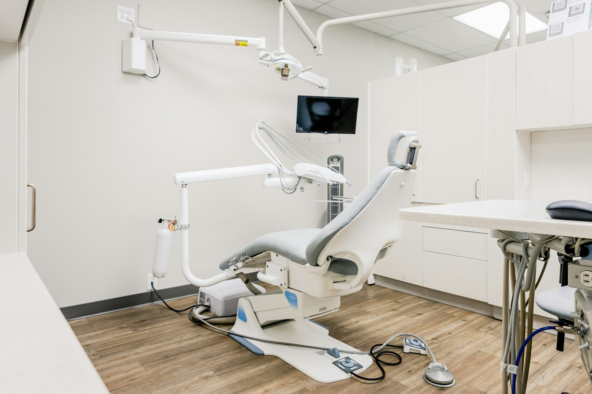
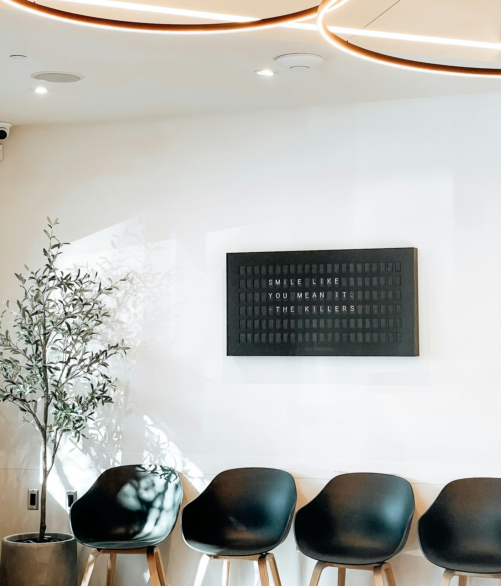
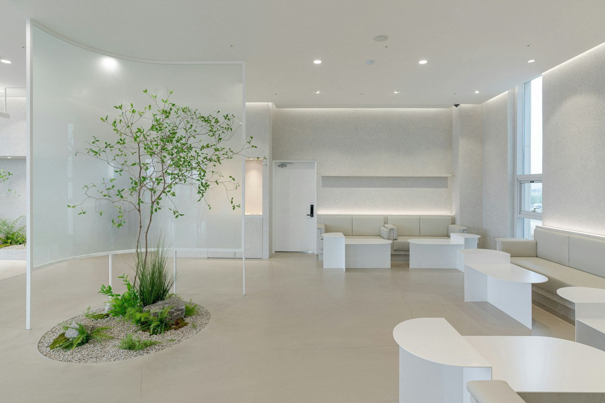
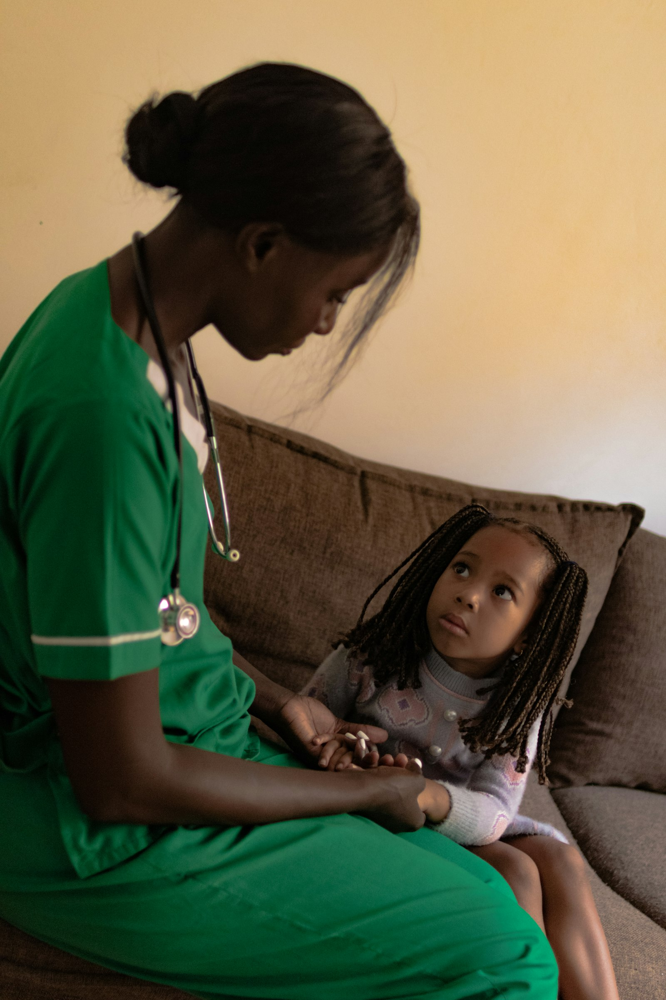
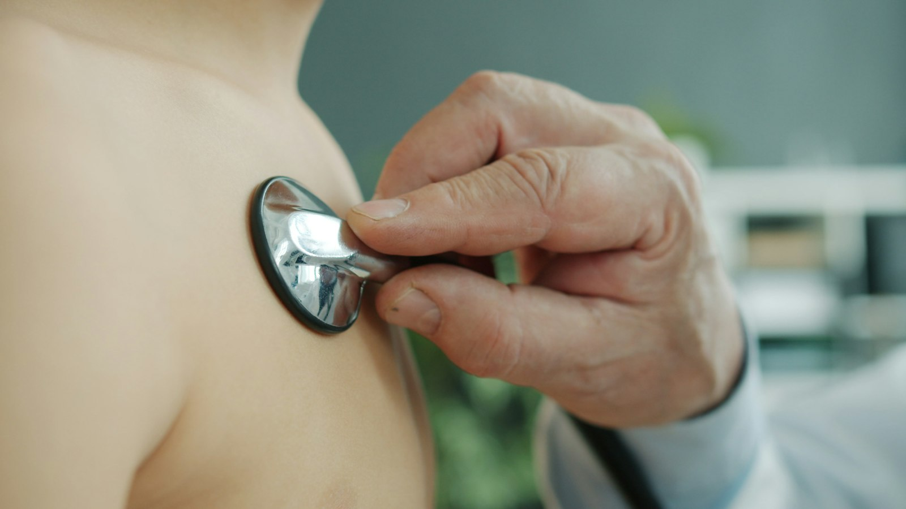

01 / 06Medicina dentária
Medicina dentária
Consultas de avaliação, higiene oral e acompanhamento da saúde da boca, para todas as idades. Cada plano é definido depois de uma avaliação clínica.
MarcarMedicina · Medicina dentária
Seis especialidades reunidas numa só clínica, para acompanhar a família inteira com proximidade, tempo e clareza.
Uma só clínica para a família inteira. Da medicina dentária à nutrição, cada especialidade tem o seu lugar — e todas partilham o mesmo cuidado.
Medicina e medicina dentária sob o mesmo teto: do primeiro contacto ao acompanhamento, a ideia é simples — explicar com clareza, ouvir com atenção e não pôr pressa a quem procura ajuda.


Medicina e medicina dentária
Imagem ilustrativaEspecialidades
Percorra o anel — ou o ecrã — e conheça cada área. Uma ideia geral, a confirmar com a equipa clínica.
Textos ilustrativos. A adequação de cada consulta ou tratamento depende sempre de avaliação por um profissional de saúde.

01 / 06Medicina dentária
Consultas de avaliação, higiene oral e acompanhamento da saúde da boca, para todas as idades. Cada plano é definido depois de uma avaliação clínica.
Marcar02 / 06Medicina
Acompanhamento da saúde da mulher nas várias fases da vida, da consulta de rotina à vigilância da gravidez, num ambiente de confiança.
Marcar
03 / 06Medicina
Acompanhamento do crescimento e da saúde de bebés, crianças e jovens, com tempo para escutar quem cresce e quem os acompanha.
Marcar
04 / 06Medicina
O primeiro ponto de contacto: consultas de vigilância, esclarecimento de dúvidas e encaminhamento para outras especialidades quando for necessário.
Marcar05 / 06Medicina
Cuidados com a saúde dos pés: avaliação, prevenção e acompanhamento de situações do dia a dia, de acordo com cada caso.
Marcar
06 / 06Medicina
Orientação alimentar adaptada a cada pessoa e a cada fase da vida, com objetivos definidos em conjunto e revistos ao longo do tempo.
MarcarO percurso
Do pedido de marcação ao acompanhamento, cinco passos desenhados no traço do M. Descrição ilustrativa — o processo real será definido com a clínica.
Escolha a especialidade e o momento que lhe convém. A receção confirma consigo todos os detalhes.
Um acolhimento atento, com tempo para preparar a consulta e esclarecer o que for preciso.
Escuta, observação e explicação clara. As decisões são conversadas consigo, passo a passo.
Se for necessário, o profissional propõe os passos seguintes e explica as opções existentes.
O cuidado não termina à saída: reavaliações e encaminhamento entre especialidades, quando fizer sentido.
Conteúdo ilustrativo e não vinculativo.
Contacto
Diga-nos o que procura e a especialidade pretendida. A equipa entra em contacto para confirmar o melhor momento.
Entidade registada na ERS · nº E175756 · 25313/2025